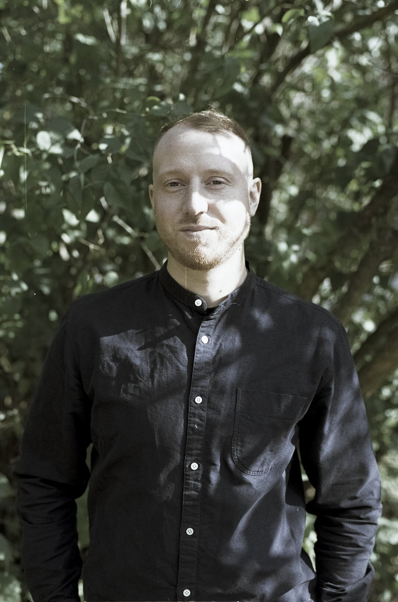

Johan Stenbeck
Grundare · Arkitekt, SAR/MSA
Arkitekt med masterexamen från Det Kongelige Akademi i Köpenhamn och bakgrund inom konst samt grafisk design. Tidigare erfarenhet från bland andra Wingårdhs, Horisont och AloCo.
Johan Stenbecks CV · PDF